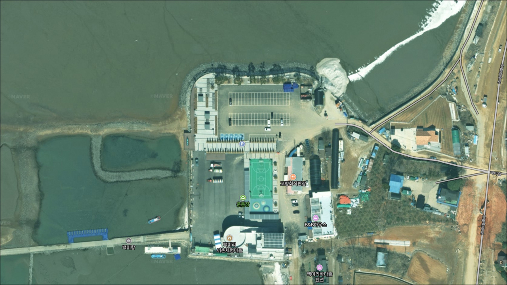
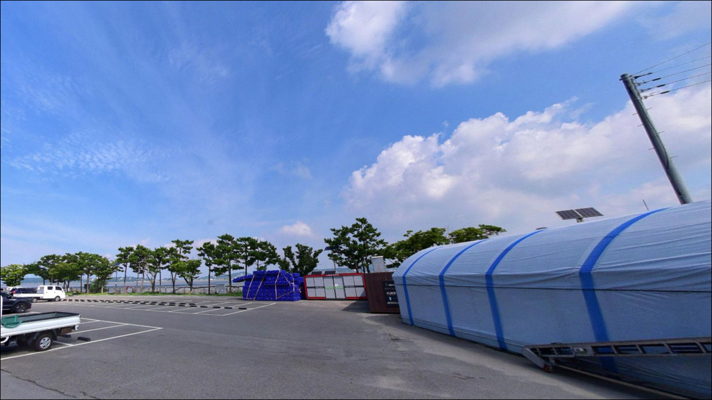
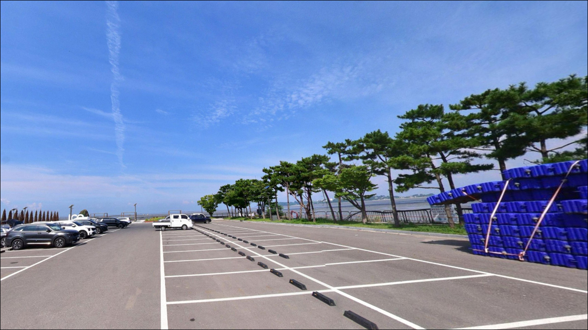
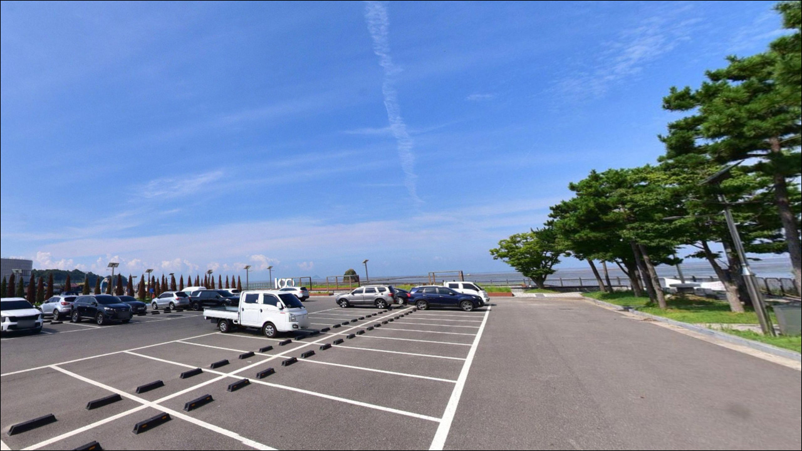
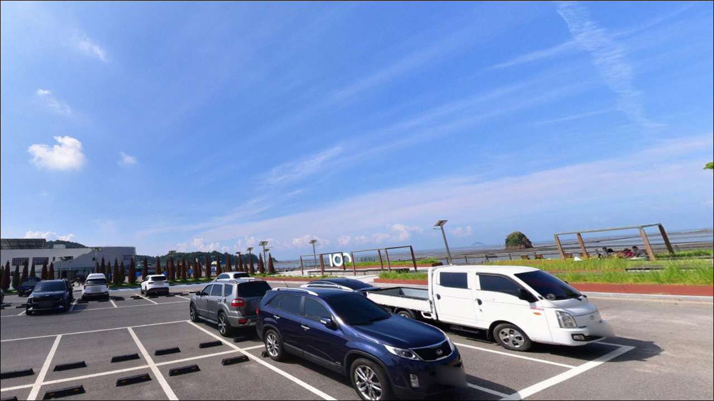
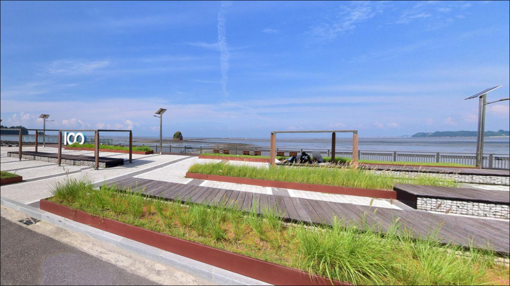
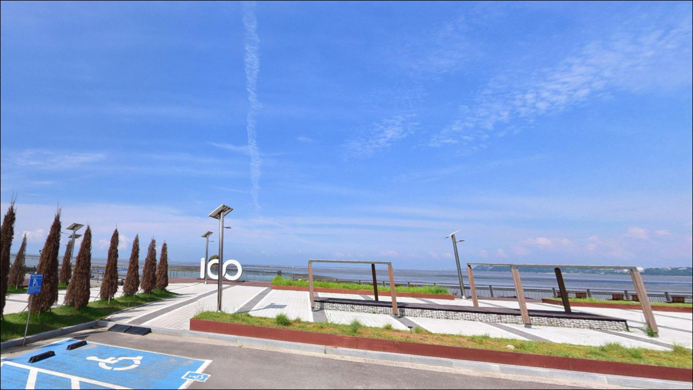
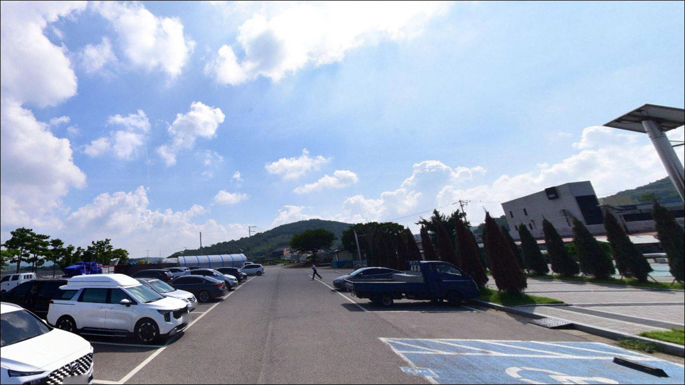
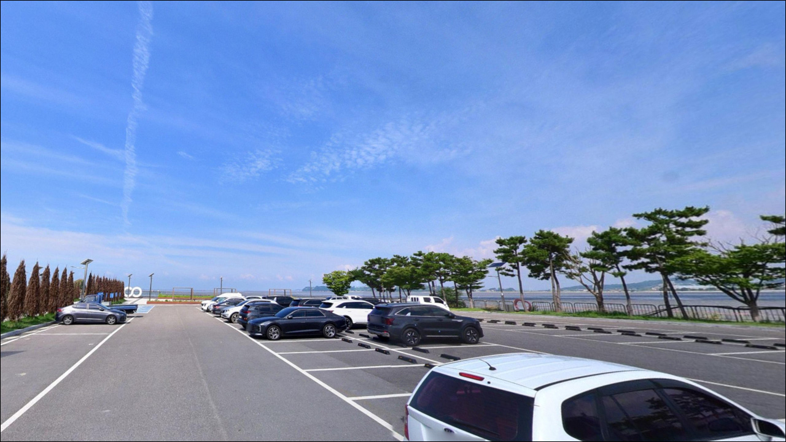

백미항, 경기 화성시 한적한 분위기 속 차박, 낚시를 함께 하기 좋은 곳
이 페이지에는 광고(제휴 링크 포함)가 있으며, 광고 링크를 통해 구매하면 운영자가 판매 수익 또는 수수료를 받을 수 있습니다. 포인트 사진: 카카오맵 스카이뷰·로드뷰. 이 페이지의 지도·사진 이미지는 카카오맵의 실제 서비스 이미지와 다를 수 있습니다.


포인트 안내
백미항
경기도 화성시 서신면 백미리 329-1
물때 확인 없이 백미항에 도착하면
방파제 앞이 텅 빈 갯벌이 되어 있습니다.
서해 화성 연안은 조수간만의 차가 커서
간조 시에는 갯벌이 수백 미터 이상 드러나고,
어떤 채비를 써도 낚시 자체가 불가능한 상황이
만들어지는 구조입니다.
이 글은 백미항의 물때 판단 기준,
낚시 방식별 진입 조건,
진입 환경과 편의 인프라에 집중합니다.
조황 단정이나 특정 어종 보장은
이 글의 범위에 포함되지 않습니다.

1. 진입 동선과 포인트 접근성
백미항은 서신면 해안도로에서 백미길을 따라
진입하는 구조입니다.
어촌체험마을로 개발된 곳이라
관광객 차량을 전제로 한 도로 구성에 가까우며,
승용차나 중형 SUV 기준으로는
진입과 회차에 큰 어려움은 없는 편입니다.
주차는 백미리 어촌체험마을 주차장을 이용하는 것이
기본 동선입니다.
방파제 또는 선착장 접근은 주차 후
도보로 이어지는 구조입니다.
성수기 주말에는 관광객 차량으로 혼잡해질 수 있어
평일 또는 이른 시간대 진입이 유리합니다.
궁평항~백미항 구간 해안도로 개통으로
화성 서해안 낚시 동선에서 접근하기
수월해진 편입니다.
마을 내부 도로는 좁아지는 구간이 있을 수 있어
대형 차량이라면 출발 전
위성지도로 진입로를 한 번 확인해 두는 편이 좋습니다.

2. 차박 환경과 야간 체류 여건
백미항은 어촌체험마을 특성상
민가 밀집도가 있고 관광객 왕래가 잦은 편입니다.
완전히 한적한 고립형 포인트와는 거리가 있으며,
낚시를 마치고 하룻밤 머무는 차박보다는
낚시 대기형 주차 포인트로 접근하는 것이
이 항구의 성격에 맞습니다.
야간에는 체험마을 시설 조명이
일부 구간에 있을 가능성이 있지만,
방파제 끝단이나 선착장 외곽은
어두울 수 있어 개인 조명 장비는 필수입니다.
관광객과 민가가 섞인 마을 구조상
야간 차량 체류 시 주민 불편을 최소화하는
자리 선택이 기본 매너입니다.


3. 주변 편의시설 및 인프라 현황
백미리 어촌체험마을에는
수산물판매장, 매점, 식당, 세족장,
정보센터, 쉼터 등이 갖춰진 것으로 확인됩니다.
화장실은 백미항 주민공동이용시설 기준
24시간 개방됩니다.
반경 3km 이내에 대형 편의점이나 마트는
서신면 내륙 방향으로 이동해야 하는 거리입니다.
식사는 마을 내 바지락칼국수 등
소규모 식당을 이용할 수 있습니다.
주유나 대용량 장비·식재료 준비는
출발 전에 갖춰 두는 편이 현실적입니다.
반경 10km권에서는 궁평항 일대에
편의점과 수산시장이 밀집해 있어
부족한 소품이나 식재료는
이 동선을 활용하면 해결할 수 있습니다.

4. 방문 전 준비사항과 확인 포인트
백미항 방문 전 가장 먼저 확인해야 할 것은
물때입니다.
바다타임에서 화성 서신면 기준 물때를 확인하고,
만조 전후 2시간이 백미항 낚시의
실질적인 공략 타이밍입니다.
이 구간을 벗어나면 수심이 급격히 얕아지는
서해 갯벌 특성을 반드시 감안해야 합니다.
갯벌에 진입할 경우에는 밀물 속도를
반드시 염두에 두어야 합니다.
서해 갯벌은 물이 들어오는 속도가 빠른 편이라
퇴로를 사전에 확인해 두지 않으면
고립 위험이 생길 수 있습니다.
구명조끼와 헤드랜턴은
야간 여부와 관계없이 기본 장비입니다.
채비는 망둥어용 지렁이 채비와
원투용 채비를 기본으로 준비합니다.
갯벌 바닥은 밑걸림이 적은 편이나
선착장 끝단이나 수로 주변에는
잔돌이 있을 수 있어
봉돌 여분은 넉넉히 챙기는 편이 좋습니다.

5. 간조에 도착하면 낚시가 안 되는 이유
조수간만의 차란 만조와 간조 사이의 수위 차이를 말하며,
서해는 타 해역 대비 이 차이가 크게 나타나는 편입니다.
백미항 앞 갯벌은 간조 시 수백 미터 이상 노출되어
방파제 끝단에서도 수심이 거의 남지 않는 상황이
일상적으로 발생하는 구조입니다.
선착장과 물양장 주변은
수로가 형성되는 구조상 어류가
특정 타이밍에 집중되는 경향이 있습니다.
만조 전후 창조·낙조 구간에
수로 흐름이 살아나면서 먹이 활동이
활발해지는 패턴을 노리는 것이
이 포인트 공략의 기본 방향입니다.
방파제 끝단 쪽은 수심 변화가 생기는 구간으로
원투나 찌낚시 시 자리 선정의 기준이 됩니다.
사리보다 조금 전후 물때가 조류 속도 면에서
다루기 수월한 편이라
초행이라면 조금 전후를 첫 방문 기준으로 잡는 것이
실패 확률을 낮추는 방법입니다.
가기 전에 최신 조황은 꼭 검색해 보시기 바랍니다.


6. 이 포인트에 어울리는 낚시 스타일
백미항에서 가장 잘 맞는 낚시는
가을 망둥어 원투낚시입니다.
원투낚시란 무게 있는 봉돌 채비를 멀리 캐스팅한 뒤
바닥층을 노리는 낚시 방식입니다.
갯벌 바닥을 선호하는 망둥어 특성상
선착장 끝단이나 방파제에서
갯고랑 방향으로 채비를 보내는 방식이
이 지형 조건에 가장 잘 맞습니다.
9월부터 11월까지가 시즌 피크가 될 가능성이 있습니다.
찌낚시도 만조 전후 선착장 주변에서
노려볼 만합니다.
내항 쪽 잔잔한 수면 구간은
만조 피크 전후로 짧게 찌를 띄워
숭어나 소형 어종을 탐색하기에
적합한 조건이 만들어지는 편입니다.
선착장 주변에서는 생활 루어 방식도
시도해 볼 수 있습니다.
어선 계류지 주변 수로 구간에
소형 지그헤드 채비로 탐색하는 방식이
이 지형에 어울리며,
수심이 확보되는 만조 타이밍에
바닥 지형 변화 구간을 중심으로 탐색하는
방식이 효율적입니다.

7. 대안 포인트와 플랜 B 동선
백미항에서 손맛이 여의치 않거나
물때가 맞지 않을 때의
첫 번째 대안은 궁평항입니다.
백미항에서 약 3~4km 거리에 위치한 궁평항은
방파제 구조로 수심이 상대적으로 확보된 편이며,
화성권에서 가장 많은 낚시 정보가 축적된
대표 포인트입니다.
거리를 조금 더 이동하면
전곡항(약 6~7km)이 있습니다.
경기도 최대 규모의 지방어항으로
선상낚시 출조와 방파제 낚시가 모두 가능하고,
갑오징어·쭈꾸미·광어 등 시즌별
다양한 어종을 노릴 수 있는 환경입니다.
백미항보다 더 다양한 낚시 스타일을
원한다면 전곡항이 가장 현실적인 대안입니다.
차박 여건이 필요한 경우라면
백미항 자체보다 궁평항이나 전곡항 방면
공영주차장 일대가 더 안정적인 편입니다.
현행 이용 가능 여부는
현장에서 직접 확인 후 판단하는 것이 기본입니다.

물때를 맞추면
백미항 갯벌이 달라 보인다
가을 망둥어 낚시를 즐기는 낚시인이라면
백미항의 갯벌 구조와 조용한 어촌 분위기는
잘 맞는 조건입니다.
물때를 철저히 계산하고
만조 전후 타이밍에 맞춰 들어간다면
갯고랑 주변에서 기대해 볼 수 있는
포인트입니다.
반면 물때 없이 방문하거나
방파제 원투 이상의 깊은 수심을 기대하고 간다면
빈손으로 돌아오는 확률이 높아지는 구조입니다.
물때 확인, 갯벌 진입 안전 확보,
채비 사전 준비, 이 세 가지를 갖추고 가면
조용한 서해 갯벌 낚시 경험으로
기억할 수 있는 곳입니다.
낚시를 마치고 하룻밤 머물 계획이라면
백미항 자체보다 궁평항이나 전곡항 방면
주차 여건을 먼저 확인해 두는 것이
현실적인 차박 동선입니다.